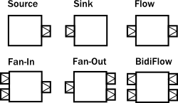
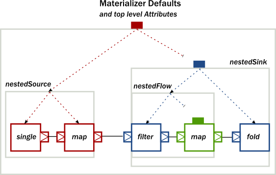

Akka Streams provide a uniform model of stream processing graphs, which allows flexible composition of reusable components. In this chapter we show how these look like from the conceptual and API perspective, demonstrating the modularity aspects of the library.
Basics of composition and modularity
Every processing stage used in Akka Streams can be imagined as a "box" with input and output ports where elements to be processed arrive and leave the stage. In this view, a Source is nothing else than a "box" with a single output port, or, a BidiFlow is a "box" with exactly two input and two output ports. In the figure below we illustrate the most common used stages viewed as "boxes".

The linear stages are Source, Sink and Flow, as these can be used to compose strict chains of processing stages.
Fan-in and Fan-out stages have usually multiple input or multiple output ports, therefore they allow to build
more complex graph layouts, not just chains. BidiFlow stages are usually useful in IO related tasks, where
there are input and output channels to be handled. Due to the specific shape of BidiFlow it is easy to
stack them on top of each other to build a layered protocol for example. The TLS support in Akka is for example
implemented as a BidiFlow.
These reusable components already allow the creation of complex processing networks. What we
have seen so far does not implement modularity though. It is desirable for example to package up a larger graph entity into
a reusable component which hides its internals only exposing the ports that are meant to the users of the module
to interact with. One good example is the Http server component, which is encoded internally as a
BidiFlow which interfaces with the client TCP connection using an input-output port pair accepting and sending
ByteString s, while its upper ports emit and receive HttpRequest and HttpResponse instances.
The following figure demonstrates various composite stages, that contain various other type of stages internally, but
hiding them behind a shape that looks like a Source, Flow, etc.

One interesting example above is a Flow which is composed of a disconnected Sink and Source.
This can be achieved by using the FromSinkAndSource() constructor method on Flow which takes the two parts as parameters.
The example BidiFlow demonstrates that internally a module can be of arbitrary complexity, and the exposed
ports can be wired in flexible ways. The only constraint is that all the ports of enclosed modules must be either
connected to each other, or exposed as interface ports, and the number of such ports needs to match the requirement
of the shape, for example a Source allows only one exposed output port, the rest of the internal ports must
be properly connected.
These mechanics allow arbitrary nesting of modules. For example the following figure demonstrates a RunnableGraph
that is built from a composite Source and a composite Sink (which in turn contains a composite Flow).

The above diagram contains one more shape that we have not seen yet, which is called RunnableGraph. It turns
out, that if we wire all exposed ports together, so that no more open ports remain, we get a module that is closed.
This is what the RunnableGraph class represents. This is the shape that a Materializer can take
and turn into a network of running entities that perform the task described. In fact, a RunnableGraph is a
module itself, and (maybe somewhat surprisingly) it can be used as part of larger graphs. It is rarely useful to embed
a closed graph shape in a larger graph (since it becomes an isolated island as there are no open port for communication
with the rest of the graph), but this demonstrates the uniform underlying model.
If we try to build a code snippet that corresponds to the above diagram, our first try might look like this:
Source.Single(0)
.Select(x => x + 1)
.Where(x => x != 0)
.Select(x => x - 2)
.To(Sink.Aggregate<int, int>(0, (sum, x) => sum + x));
It is clear however that there is no nesting present in our first attempt, since the library cannot figure out
where we intended to put composite module boundaries, it is our responsibility to do that. If we are using the
DSL provided by the Flow, Source, Sink classes then nesting can be achieved by calling one of the
methods WithAttributes() or Named() (where the latter is just a shorthand for adding a name attribute).
The following code demonstrates how to achieve the desired nesting:
var nestedSource =
Source.Single(0) // An atomic source
.Select(x => x + 1) // an atomic processing stage
.Named("nestedSource"); // wraps up the current Source and gives it a name
var nestedFlow =
Flow.Create<int>().Where(x => x != 0) // an atomic processing stage
.Select(x => x - 2) // another atomic processing stage
.Named("nestedFlow"); // wraps up the Flow, and gives it a name
var nestedSink = nestedFlow
.To(Sink.Aggregate<int, int>(0, (sum, x) => sum + x)) // wire an atomic sink to the nestedFlow
.Named("nestedSink"); // wrap it up
// Create a RunnableGraph
var runnableGraph = nestedSource.To(nestedSink);
Once we have hidden the internals of our components, they act like any other built-in component of similar shape. If we hide some of the internals of our composites, the result looks just like if any other predefine component has been used:

If we look at usage of built-in components, and our custom components, there is no difference in usage as the code snippet below demonstrates.
// Create a RunnableGraph
var runnableGraph = nestedSource.To(nestedSink);
// Usage is uniform, no matter if modules are composite or atomic
var runnableGraph2 = Source.Single(0).To(Sink.Aggregate<int, int>(0, (sum, x) => sum + x));
Composing complex systems
In the previous section we explored the possibility of composition, and hierarchy, but we stayed away from non-linear,
generalized graph components. There is nothing in Akka Streams though that enforces that stream processing layouts
can only be linear. The DSL for Source and friends is optimized for creating such linear chains, as they are
the most common in practice. There is a more advanced DSL for building complex graphs, that can be used if more
flexibility is needed. We will see that the difference between the two DSLs is only on the surface: the concepts they
operate on are uniform across all DSLs and fit together nicely.
As a first example, let's look at a more complex layout:

The diagram shows a RunnableGraph (remember, if there are no unwired ports, the graph is closed, and therefore
can be materialized) that encapsulates a non-trivial stream processing network. It contains fan-in, fan-out stages,
directed and non-directed cycles. The Runnable() method of the GraphDSL object allows the creation of a
general, closed, and runnable graph. For example the network on the diagram can be realized like this:
RunnableGraph.FromGraph(GraphDsl.Create(builder =>
{
var a = builder.Add(Source.Single(0)).Outlet;
var b = builder.Add(new Broadcast<int>(2));
var c = builder.Add(new Merge<int>(2));
var d = builder.Add(Flow.Create<int>().Select(x => x + 1));
var e = builder.Add(new Balance<int>(2));
var f = builder.Add(new Merge<int>(2));
var g = builder.Add(Sink.ForEach<int>(Console.WriteLine)).Inlet;
builder.To(c).From(f);
builder.From(a).Via(b).Via(c).To(f);
builder.From(b).Via(d).Via(e).To(f);
builder.From(e).To(g);
return ClosedShape.Instance;
}));
In the code above we used the implicit port numbering feature (to make the graph more readable and similar to the diagram)
and we imported Source s, Sink s and Flow s explicitly. It is possible to refer to the ports
explicitly, and it is not necessary to import our linear stages via Add(), so another version might look like this:
RunnableGraph.FromGraph(GraphDsl.Create(builder =>
{
var b = builder.Add(new Broadcast<int>(2));
var c = builder.Add(new Merge<int>(2));
var e = builder.Add(new Balance<int>(2));
var f = builder.Add(new Merge<int>(2));
builder.To(c.In(0)).From(f.Out);
builder.From(Source.Single(0)).To(b.In);
builder.From(b.Out(0)).To(c.In(1));
builder.From(c.Out).To(f.In(0));
builder.From(b.Out(1)).Via(Flow.Create<int>().Select(x => x + 1)).To(e.In);
builder.From(e.Out(0)).To(f.In(1));
var sink = Sink.ForEach<int>(Console.WriteLine)
.MapMaterializedValue(_ => NotUsed.Instance);
builder.From(e.Out(1)).To(sink);
return ClosedShape.Instance;
}));
Similar to the case in the first section, so far we have not considered modularity. We created a complex graph, but
the layout is flat, not modularized. We will modify our example, and create a reusable component with the graph DSL.
The way to do it is to use the Create() factory method on GraphDSL. If we remove the sources and sinks
from the previous example, what remains is a partial graph:

We can recreate a similar graph in code, using the DSL in a similar way than before:
var partial = GraphDsl.Create(builder =>
{
var b = builder.Add(new Broadcast<int>(2));
var c = builder.Add(new Merge<int>(2));
var e = builder.Add(new Balance<int>(2));
var f = builder.Add(new Merge<int>(2));
builder.To(c).From(f);
builder.From(b).Via(c).To(f);
builder.From(b).Via(Flow.Create<int>().Select(x => x + 1)).Via(e).To(f);
return new FlowShape<int, int>(b.In, e.Out(1));
}).Named("partial");
The only new addition is the return value of the builder block, which is a Shape. All graphs (including
Source, BidiFlow, etc) have a shape, which encodes the typed ports of the module. In our example
there is exactly one input and output port left, so we can declare it to have a FlowShape by returning an
instance of it. While it is possible to create new Shape types, it is usually recommended to use one of the
matching built-in ones.
The resulting graph is already a properly wrapped module, so there is no need to call Named() to encapsulate the graph, but
it is a good practice to give names to modules to help debugging.

Since our partial graph has the right shape, it can be already used in the simpler, linear DSL:
Source.Single(0).Via(partial).To(Sink.Ignore<int>());
It is not possible to use it as a Flow yet, though (i.e. we cannot call .Where() on it), but Flow
has a FromGraph() method that just adds the DSL to a FlowShape. There are similar methods on Source,
Sink and BidiShape, so it is easy to get back to the simpler DSL if a graph has the right shape.
For convenience, it is also possible to skip the partial graph creation, and use one of the convenience creator methods.
To demonstrate this, we will create the following graph:

The code version of the above closed graph might look like this:
// Convert the partial graph of FlowShape to a Flow to get
// access to the fluid DSL (for example to be able to call .Where())
var flow = Flow.FromGraph(partial);
// Simple way to create a graph backed Source
var source = Source.FromGraph(GraphDsl.Create(b =>
{
var merge = b.Add(new Merge<int>(2));
b.From(Source.Single(0)).To(merge);
b.From(Source.From(new[] {2, 3, 4})).To(merge);
// Exposing exactly one output port
return new SourceShape<int>(merge.Out);
}));
// Building a Sink with a nested Flow, using the fluid DSL
var nestedFlow = Flow.Create<int>().Select(x => x*2).Skip(10).Named("nestedFlow");
var sink = nestedFlow.To(Sink.First<int>());
// Putting all together
var closed = source.Via(flow.Where(x => x > 1)).To(sink);
Note
All graph builder sections check if the resulting graph has all ports connected except the exposed ones and will throw an exception if this is violated.
We are still in debt of demonstrating that RunnableGraph is a component just like any other, which can
be embedded in graphs. In the following snippet we embed one closed graph in another:
var closed1 = Source.Single(0).To(Sink.ForEach<int>(Console.WriteLine));
var closed2 = RunnableGraph.FromGraph(GraphDsl.Create(b =>
{
var embeddedClosed = b.Add(closed1);
// …
return embeddedClosed;
}));
The type of the imported module indicates that the imported module has a ClosedShape, and so we are not
able to wire it to anything else inside the enclosing closed graph. Nevertheless, this "island" is embedded properly,
and will be materialized just like any other module that is part of the graph.
As we have demonstrated, the two DSLs are fully interoperable, as they encode a similar nested structure of "boxes with
ports", it is only the DSLs that differ to be as much powerful as possible on the given abstraction level. It is possible
to embed complex graphs in the fluid DSL, and it is just as easy to import and embed a Flow, etc, in a larger,
complex structure.
We have also seen, that every module has a Shape (for example a Sink has a SinkShape)
independently which DSL was used to create it. This uniform representation enables the rich composability of various
stream processing entities in a convenient way.
Materialized values
After realizing that RunnableGraph is nothing more than a module with no unused ports (it is an island), it becomes clear that
after materialization the only way to communicate with the running stream processing logic is via some side-channel.
This side channel is represented as a materialized value. The situation is similar to Actor's, where the
Props instance describes the actor logic, but it is the call to ActorOf() that creates an actually running
actor, and returns an IActorRef that can be used to communicate with the running actor itself. Since the
Props can be reused, each call will return a different reference.
When it comes to streams, each materialization creates a new running network corresponding to the blueprint that was
encoded in the provided RunnableGraph. To be able to interact with the running network, each materialization
needs to return a different object that provides the necessary interaction capabilities. In other words, the
RunnableGraph can be seen as a factory, which creates:
- a network of running processing entities, inaccessible from the outside
- a materialized value, optionally providing a controlled interaction capability with the network
Unlike actors though, each of the processing stages might provide a materialized value, so when we compose multiple
stages or modules, we need to combine the materialized value as well (there are default rules which make this easier,
for example To() and Via() takes care of the most common case of taking the materialized value to the left.
See Combining materialized values for details). We demonstrate how this works by a code example and a diagram which graphically demonstrates what is happening.
The propagation of the individual materialized values from the enclosed modules towards the top will look like this:

To implement the above, first, we create a composite Source, where the enclosed Source have a
materialized type of Task<NotUsed>. By using the combiner function Keep.Left, the resulting materialized
type is of the nested module (indicated by the color red on the diagram):
// Materializes to TaskCompletionSource<int> (red)
var source = Source.Maybe<int>();
// Materializes to NotUsed (black)
var flow = Flow.Create<int>().Take(100);
// Materializes to TaskCompletionSource<int> (red)
var nestedSource = source.ViaMaterialized(flow, Keep.Left).Named("nestedSource");
Next, we create a composite Flow from two smaller components. Here, the second enclosed Flow has a
materialized type of Task<OutgoingConnection>, and we propagate this to the parent by using Keep.Right
as the combiner function (indicated by the color yellow on the diagram):
// Materializes to NotUsed (orange)
var flow1 = Flow.Create<int>().Select(x => ByteString.FromString(x.ToString()));
// Materializes to Task<OutgoingConnection> (yellow)
var flow2 = Sys.TcpStream().OutgoingConnection("localhost", 8080);
// Materializes to Task<OutgoingConnection> (yellow)
var nestedFlow = flow1.ViaMaterialized(flow2, Keep.Right).Named("nestedFlow");
As a third step, we create a composite Sink, using our nestedFlow as a building block. In this snippet, both
the enclosed Flow and the folding Sink has a materialized value that is interesting for us, so
we use Keep.Both to get a Tuple of them as the materialized type of nestedSink (indicated by the color
blue on the diagram)
// Materializes to Task<String> (green)
var sink = Sink.Aggregate<ByteString, string>("", (agg, s) => agg + s.DecodeString());
// Materializes to (Task<OutgoingConnection>, Task<String>) (blue)
var nestedSink = nestedFlow.ToMaterialized(sink, Keep.Both);
As the last example, we wire together nestedSource and nestedSink and we use a custom combiner function to
create a yet another materialized type of the resulting RunnableGraph. This combiner function just ignores
the Task[Sink] part, and wraps the other two values in a custom case class MyClass (indicated by color purple on the diagram):
public sealed class MyClass
{
private readonly TaskCompletionSource<int> _completion;
private readonly Tcp.OutgoingConnection _connection;
public MyClass(TaskCompletionSource<int> completion, Tcp.OutgoingConnection connection)
{
_completion = completion;
_connection = connection;
}
public void Close() => _completion.SetResult(1);
}
// Materializes to Task<MyClass> (purple)
var runnableGraph = nestedSource.ToMaterialized(nestedSink, (completion, rest) =>
{
var connectionTask = rest.Item1;
return connectionTask.ContinueWith(task => new MyClass(completion, task.Result));
});
Note
The nested structure in the above example is not necessary for combining the materialized values, it just demonstrates how the two features work together. See Combining materialized values for further examples of combining materialized values without nesting and hierarchy involved.
Attributes
We have seen that we can use Named() to introduce a nesting level in the fluid DSL (and also explicit nesting by using
Create() from :class:GraphDSL). Apart from having the effect of adding a nesting level, Named() is actually
a shorthand for calling WithAttributes(Attributes.CreateName("someName")). Attributes provide a way to fine-tune certain
aspects of the materialized running entity. For example buffer sizes for asynchronous stages can be controlled via
attributes (see). When it comes to hierarchic composition, attributes are inherited by nested modules, unless they override them with a custom value.
The code below, a modification of an earlier example sets the InputBuffer attribute on certain modules, but not
on others:
var nestedSource = Source.Single(0)
.Select(x => x + 1)
.Named("nestedSource"); // Wrap, no inputBuffer set
var nestedFlow =
Flow.Create<int>()
.Where(x => x != 0)
.Via(Flow.Create<int>().Select(x => x - 2).WithAttributes(Attributes.CreateInputBuffer(4, 4)))
// override
.Named("nestedFlow"); // Wrap, no inputBuffer set
var nestedSink = nestedFlow
.To(Sink.Aggregate<int, int>(0, (sum, i) => sum + i)) // wire an atomic sink to the nestedFlow
.WithAttributes(Attributes.CreateName("nestedSink").And(Attributes.CreateInputBuffer(3, 3))); // override
The effect is, that each module inherits the InputBuffer attribute from its enclosing parent, unless it has
the same attribute explicitly set. nestedSource gets the default attributes from the materializer itself. nestedSink
on the other hand has this attribute set, so it will be used by all nested modules. nestedFlow will inherit from nestedSink
except the Select stage which has again an explicitly provided attribute overriding the inherited one.

This diagram illustrates the inheritance process for the example code (representing the materializer default attributes
as the color red, the attributes set on nestedSink as blue and the attributes set on nestedFlow as green).